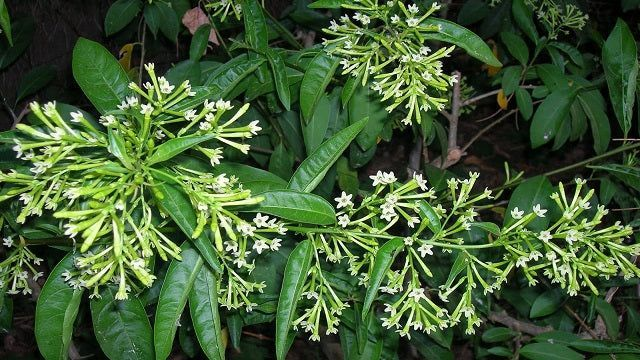

Ayuntamiento de Senés
JARDIN BOTANICO DE ESPECIES AUTOCTONAS DE SENES

Cestrum nocturnum

El galán de noche (Cestrum nocturnum) es un arbusto perenne muy apreciado por su intensa fragancia nocturna, característica que lo convierte en una de las plantas ornamentales más valoradas en climas cálidos. Aunque no es autóctono del Mediterráneo, se ha adaptado bien a jardines y espacios urbanos.
Puede alcanzar entre 2 y 4 metros de altura, con un porte arbustivo y ramas flexibles. Sus hojas son alargadas y de color verde intenso. Sus flores son pequeñas, de tonalidad blanquecina o verdosa, y se agrupan en racimos, liberando su aroma principalmente durante la noche.
Originario de regiones tropicales de América, el galán de noche se cultiva ampliamente en zonas templadas y cálidas. En el ámbito mediterráneo, se encuentra principalmente en jardines y patios, donde prospera en climas suaves.
El galán de noche no destaca por sus propiedades medicinales, pero sí por su valor ornamental y aromático. Su fragancia intensa contribuye a crear ambientes agradables en espacios exteriores durante las noches de verano.
Esta planta simboliza el misterio y la belleza nocturna, debido a su característica de liberar su aroma únicamente durante la noche. También se asocia con la serenidad y el descanso.
En Senés, el galán de noche ha sido cultivado principalmente en patios y jardines, donde se valora por su aroma durante las noches estivales. Su presencia está ligada al ámbito doméstico y ornamental.
Florece principalmente durante el verano, momento en el que desprende su característico aroma nocturno, atrayendo insectos polinizadores.
Su fragancia puede percibirse a gran distancia durante la noche. A pesar de su atractivo, algunas partes de la planta pueden ser tóxicas si se ingieren.